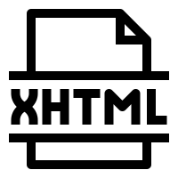
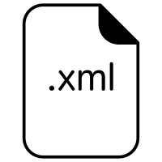
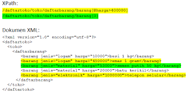
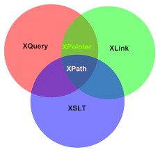

Actividad 0.1
Nombre: juan Camilo tamayo Gomez
Grupo: A Superior
Definiciones
- Lenguaje de marcas
Es un modo de codificar (redactar) un documento done, junto con el texto, se incorporan etiquetas (marcas o anotaciones) con informacion adicional relativa a la estructura del texto o su formato de presentacion.
- Tipos de lenguajes de marcas
Lenguajes de presentacion
Estos suelen ocultar las etiquetas y mostrar al usuario solamente el texto con su formato
Lenguajes de procedimientos
Orientado tambien a la presentacion pero, ademas, el programa que representa el documento debe interpretar las etiquetas para realizar acciones en funcion de ellas
Lenguajes descriptivos o semanticos
Describen las diferenter partes en las que se estructura el documento, es decir, definen su contenid, pero sin especificar como deben representarse
- Sistemas de gestion de informacion
ERP (Sistema de gestion empresarial
Estos programas se hacen cargo a distintas operaciones internas de una empresa, desde produccion a distribucion o incluso recursos humanos
Ventajas de un sistema ERP
- Automatizacion de procesos de la empresa
- Disponibilidad de la informacion de la empresa en una misma plataforma
- Integracion de las distintas bases de datos de una compañia en un solo programa.
- Ahorro de tipo de costes
Caracteristicas
| HTML |
 Es el lenguaje con el que se define el contenido de las paginas web. Basicamente se trata de un conjunto de etiquetas que sirven para definir el texto y otros elementos que compondran una pagina web, como imagenes, listas, videos, etc. Es el lenguaje con el que se define el contenido de las paginas web. Basicamente se trata de un conjunto de etiquetas que sirven para definir el texto y otros elementos que compondran una pagina web, como imagenes, listas, videos, etc. |
| CSS |
 Es lo que se denomina lenguaje de hojas de estilo en cascada y se usa para estilizar elementos escritos en un lenguaje de marcado como HTML. CSS separa el contenido de la representacion visual del sitio Es lo que se denomina lenguaje de hojas de estilo en cascada y se usa para estilizar elementos escritos en un lenguaje de marcado como HTML. CSS separa el contenido de la representacion visual del sitio |
| XHTML |
Es un lenguaje de marcado que te permite editar webs. Es un formula de HTML que utiliza el meta lenguaje de marcado XML, lo cual es una ventaja clave en su usabilidad porque muchos formatos de datos estan basados en XML y los dispositivos modernos requieren una version estricta del lenguaje de marcado porque no pueden mostrar mal el codigo fuente. |
| XML |
Es un lenguaje de marcado que define un conjunto de reglas para la codificacion de documentos |
| MARKDOWN |
Un lenguaje de marcado que facilita la aplicacion de formato a un texto empleado una serie de caracteres de una forma especial. Fue pensado para elaborar textos cuyo destino iba a ser la web con mas rapidez y sencillez que si estuviesemos empleando directamente HTML |
| XPATH |
 El sistema que se utiliza para navegar y consultar los elementos y atributos contenidos en la estructura de un documento XML. |
| XQUERY |
 Extraer informacion de bases de datos o documentos XML. Se puede decir que XQUERY es a XML lo mismo que SQL a las bases de datos relacionales. Se basa en el lenguaje XPATH para el acceso a los modos XML, pudiendo utilizar todos sus operadores y funciones |